background-image: url(../img/fp-tower/website-background.svg) class: center, middle, white .title[Recursions] --- # Recursions <br> <br> ## Recursive data structures ## Recursive functions --- class: medium-code # Recursive functions .forty-seven-left[ ```scala def printMany(n: Int, message: String): Unit = if(n <= 0) () // do nothing else { println(message) printMany(n - 1, message) } printMany(3, "FP is awesome") // FP is awesome // FP is awesome // FP is awesome ``` ] -- .forty-seven-right[ ```scala def printMany(n: Int, message: String): Unit = { var counter = n while (counter > 0) { counter -= 1 println("FP is awesome") } } printMany(3, "FP is awesome") // FP is awesome // FP is awesome // FP is awesome ``` ] --- class: medium-code # Recursive functions .forty-seven-left[ ```scala def printMany(n: Int, message: String): Unit = if(n > 0) { println(message) printMany(n - 1, message) } else () printMany(3, "FP is awesome") // FP is awesome // FP is awesome // FP is awesome ``` ] .forty-seven-right[ ```scala def printMany(n: Int, message: String): Unit = { var counter = n while (counter > 0) { counter -= 1 println("FP is awesome") } } printMany(3, "FP is awesome") // FP is awesome // FP is awesome // FP is awesome ``` ] --- class: medium-code # Recursive functions .forty-seven-left[ ```scala def printMany(n: Int, message: String): Unit = (1 to n).foreach(_ => println(message)) printMany(3, "FP is awesome") // FP is awesome // FP is awesome // FP is awesome ``` ] --- class: medium-code # Recursive data structures .fifty-seven-left[ <br> ```scala case class Person(name: String, children: List[Person]) val bob = Person("Bob", Nil) val lea = Person("Lea", Nil) val luc = Person("Luc", Nil) val eve = Person("Eve", List(bob, lea, luc)) val joe = Person("Joe", Nil) val eda = Person("Eda", List(joe, eve)) ``` ] .forty-two-right[ 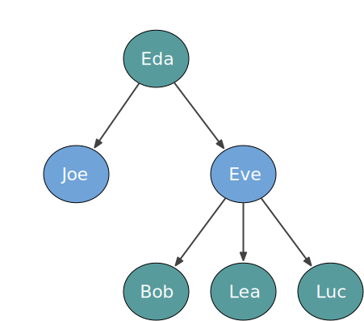 ] --- # Recursive data structures .forty-seven-left[ ## JSON ```json { "name": "John Doe", "age": 25, "address": { "street": { "number" : 12, "name" : "Cody road" }, "country": "UK" } } ``` ] .forty-seven-right[ ## YAML ```yaml name: John Doe age: 25 address: street: 12 number: 12 name: Cody road country: UK ``` ] --- # Recursive data structures .forty-seven-left[ ## JSON ```json { "name": "John Doe", "age": 25, "address": { "street": { "number" : 12, "name" : "Cody road" }, "country": "UK" } } ``` ] .forty-seven-right[ 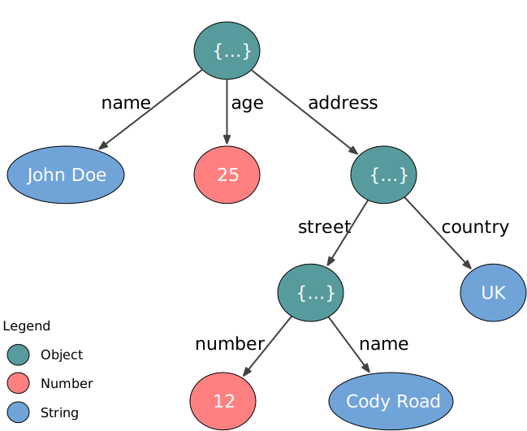 ] --- # Is JSON a case class? .forty-seven-left[ <br> ```scala case class Json( number: Double, text : String, obj : Map[String, Json], ) ``` ] --- # Is JSON a case class? .forty-seven-left[ <br> ```scala case class Json( number: Option[Double], text : Option[String], obj : Option[Map[String, Json]], ) val json = Json( number = None, text = Some("John Doe"), obj = None ) ``` ] --- # Is JSON a case class? .forty-seven-left[ <br> ```scala case class Json( number: Option[Double], text : Option[String], obj : Option[Map[String, Json]], ) val json1 = Json( Some(25), Some("John Doe"), None ) val json2 = Json(None, None, None) ``` ] --- class: medium-code # JSON is a recursive enumeration .forty-seven-left[ ```scala enum Json { // Leaves case JsonNumber(number: Double) case JsonString(text : String) // Branch case JsonObject(obj: Map[String, Json]) } ``` ] --- class: medium-code # JSON is a recursive enumeration .forty-seven-left[ ```scala enum Json { // Leaves case JsonNumber(number: Double) case JsonString(text : String) // Branch case JsonObject(obj: Map[String, Json]) } val json: Json = Json.JsonNumber(25) import Json._ val number: Json = JsonNumber(25) val text : Json = JsonString("John Doe") val obj : Json = JsonObject(Map()) ``` ] --- class: medium-code # JSON is a recursive enumeration .forty-seven-left[ ## In Scala 3 ```scala enum Json { // Leaves case JsonNumber(number: Double) case JsonString(text : String) // Branch case JsonObject(obj: Map[String, Json]) } ``` ] .fifty-two-right[ ## In Scala 2 ```scala sealed trait Json // Leaves case class JsonNumber(number: Double) extends Json case class JsonString(text : String) extends Json // Branch case class JsonObject(obj: Map[String, Json]) extends Json ``` ] --- class: medium-code # JSON is a recursive enumeration <br> .fifty-two-left[ ```scala sealed trait Json // Leaves case class JsonNumber(number: Double) extends Json case class JsonString(text : String) extends Json // Branch case class JsonObject(obj: Map[String, Json]) extends Json ``` ] .forty-two-right[ <br> ```scala val number = JsonNumber(12) // number: JsonNumber = JsonNumber(number = 12.0) val json: Json = JsonNumber(12) // json: Json = JsonNumber(number = 12.0) ``` ] --- # Working with recursive enumerations <br> ```scala val john: Json = JsonObject(Map( "name" -> JsonString("John Doe"), "age" -> JsonNumber(25), "email" -> JsonString(" john@doe.com "), "address" -> JsonObject(Map( "street-number" -> JsonNumber(12), "post-code" -> JsonString("E16 4SR ") )) )) ``` --- class: medium-code # Working with recursive enumerations <br> ```scala def trimAll(json: Json): Json = ??? ``` --- class: medium-code # Working with recursive enumerations <br> ```scala def trimAll(json: Json): Json = json match { case JsonNumber(num) => ??? case JsonString(text) => ??? case JsonObject(obj) => ??? } ``` --- class: medium-code # Working with recursive enumerations <br> ```scala def trimAll(json: Json): Json = json match { case JsonNumber(num) => ??? case JsonObject(obj) => ??? } // warning: match may not be exhaustive. // It would fail on the following input: JsonString(_) // json match { // ^^^^ ``` ## Transform this warning into an error ```scala scalacOptions += "-Wconf:cat=other-match-analysis:error" ``` --- class: medium-code # Working with recursive enumerations <br> ```scala def trimAll(json: Json): Json = json match { case JsonNumber(num) => JsonNumber(num) // do nothing case JsonString(text) => ??? case JsonObject(obj) => ??? } ``` --- class: medium-code # Working with recursive enumerations <br> ```scala def trimAll(json: Json): Json = json match { case _: JsonNumber => json case JsonString(text) => ??? case JsonObject(obj) => ??? } ``` --- class: medium-code # Working with recursive enumerations <br> ```scala def trimAll(json: Json): Json = json match { case _: JsonNumber => json case JsonString(text) => JsonString(text.trim) case JsonObject(obj) => ??? } ``` --- class: medium-code # Working with recursive enumerations <br> ```scala def trimAll(json: Json): Json = json match { case _: JsonNumber => json case JsonString(text) => JsonString(text.trim) case JsonObject(obj) => val newObj = obj.map { case (key, value) => (key, trimAll(value)) } JsonObject(newObj) } ``` --- class: medium-code # Working with recursive enumerations ```scala def trimAll(json: Json): Json = json match { case _: JsonNumber => json case JsonString(text) => JsonString(text.trim) case JsonObject(obj) => val newObj = obj.map { case (key, value) => (key, trimAll(value)) } JsonObject(newObj) } ``` .fifty-two-left[ ```scala john // john: Json = JsonObject(Map( // "name" -> JsonString("John Doe"), // "age" -> JsonNumber(25), // "email" -> JsonString(" john@doe.com "), // "address" -> JsonObject(Map( // "street-number" -> JsonNumber(12), // "post-code" -> JsonString("E16 4SR ") // )) ``` ] .forty-seven-right[ ```scala trimAll(john) // res: Json = JsonObject(Map( // "name" -> JsonString("John Doe"), // "age" -> JsonNumber(25), // "email" -> JsonString("john@doe.com"), // "address" -> JsonObject(Map( // "street-number" -> JsonNumber(12), // "post-code" -> JsonString("E16 4SR") // )) ``` ] --- background-image: url(../img/fp-tower/website-background-white.svg) class: middle, white # JsonExercises.scala --- class: medium-code # Recursive data structures .forty-two-left[ <br> ```bash $ sbt new scala/scala-seed.g8 ``` ] .fifty-seven-right[.center[ 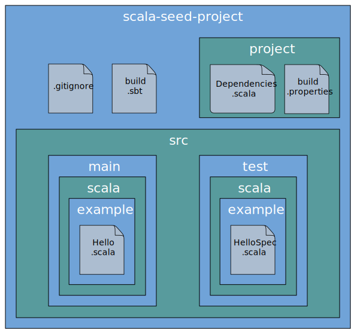 ]] --- class: medium-code # File system: disk usage .forty-two-left[ <br> ```bash $ sbt new scala/scala-seed.g8 ``` <br> ```bash $ cd scala-seed-project $ du -b . 249 ./project 344 ./src/test/scala/example 440 ./src/test/scala 536 ./src/test 234 ./src/main/scala/example 330 ./src/main/scala 426 ./src/main 1090 ./src 1986 . ``` ] .fifty-seven-right[.center[ ]] --- # Imperative approach .forty-seven-left[ ```scala import java.io.File def diskUsage(file: File): Long = ??? ``` ] --- # Imperative approach .forty-seven-left[ ```scala import java.io.File def diskUsage(file: File): Long = if(file.isDirectory) ??? else // normal file file.length() ``` ] --- # Imperative approach .forty-seven-left[ ```scala import java.io.File def diskUsage(file: File): Long = if(file.isDirectory) { var total = 0L for (child <- file.listFiles()) total += child.length() total } else file.length() ``` ] --- # Imperative approach .forty-seven-left[ ```scala import java.io.File def diskUsage(file: File): Long = { var total = file.length() if(file.isDirectory) { for (child <- file.listFiles()) total += child.length() } total } ``` ] --- # Imperative approach .forty-seven-left[ ```scala import java.io.File import scala.collection.mutable def diskUsage(input: File): Long = { var total = 0L val queue = mutable.Queue(input) while (queue.nonEmpty) { val file = queue.dequeue() total += file.length() if(file.isDirectory) queue.addAll(file.listFiles()) } total } ``` ] --- # Imperative approach .forty-seven-left[ ```scala import java.io.File import scala.collection.mutable def diskUsage(input: File): Long = { var total = 0L val queue = mutable.Queue(input) while (queue.nonEmpty) { val file = queue.dequeue() total += file.length() if(file.isDirectory) queue.addAll(file.listFiles()) } total } ``` ] .forty-seven-right[.center[ 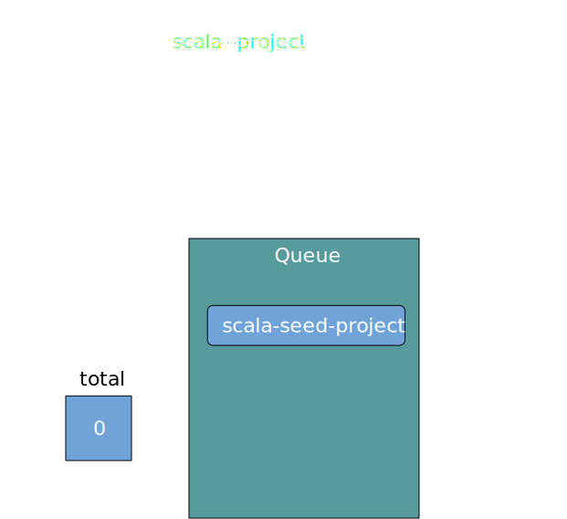 ]] --- # Imperative approach .forty-seven-left[ ```scala import java.io.File import scala.collection.mutable def diskUsage(input: File): Long = { var total = 0L val queue = mutable.Queue(input) while (queue.nonEmpty) { val file = queue.dequeue() total += file.length() if(file.isDirectory) queue.addAll(file.listFiles()) } total } ``` ] .forty-seven-right[.center[ 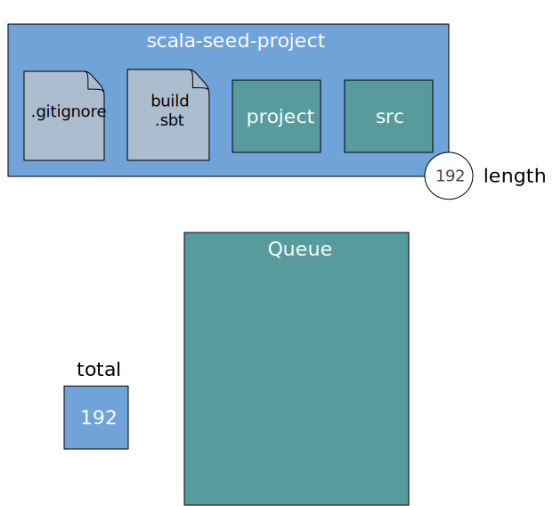 ]] --- # Imperative approach .forty-seven-left[ ```scala import java.io.File import scala.collection.mutable def diskUsage(input: File): Long = { var total = 0L val queue = mutable.Queue(input) while (queue.nonEmpty) { val file = queue.dequeue() total += file.length() if(file.isDirectory) queue.addAll(file.listFiles()) } total } ``` ] .forty-seven-right[.center[ 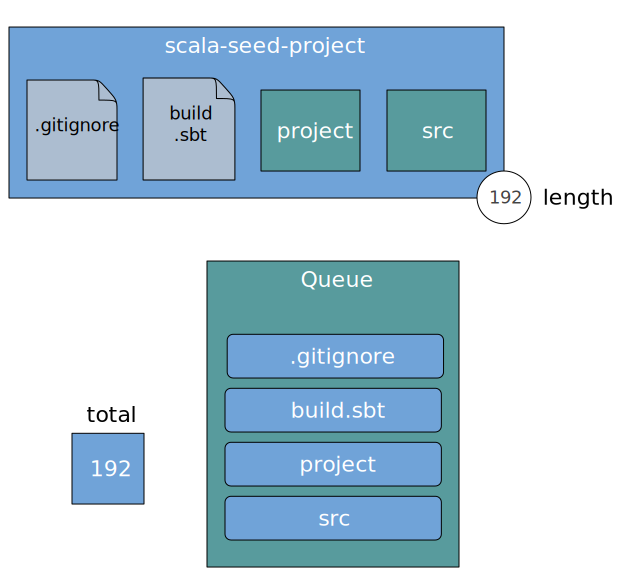 ]] --- # Imperative approach .forty-seven-left[ ```scala import java.io.File import scala.collection.mutable def diskUsage(input: File): Long = { var total = 0L val queue = mutable.Queue(input) while (queue.nonEmpty) { val file = queue.dequeue() total += file.length() if(file.isDirectory) queue.addAll(file.listFiles()) } total } ``` ] .forty-seven-right[.center[ 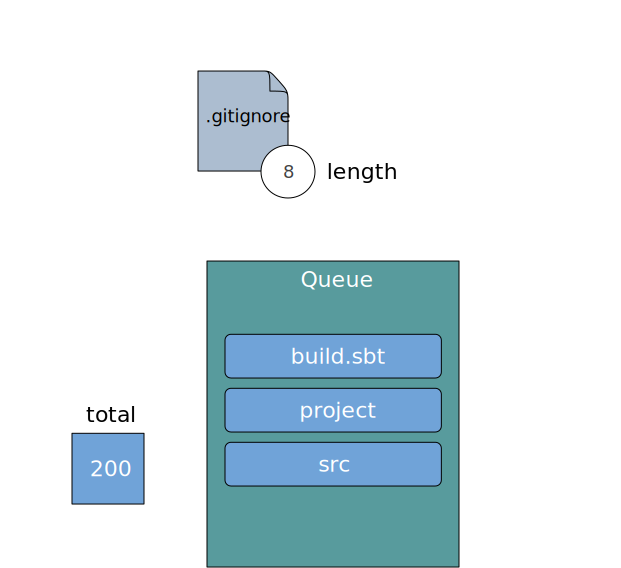 ]] --- # Imperative approach .forty-seven-left[ ```scala import java.io.File import scala.collection.mutable def diskUsage(input: File): Long = { var total = 0L val queue = mutable.Queue(input) while (queue.nonEmpty) { val file = queue.dequeue() total += file.length() if(file.isDirectory) queue.addAll(file.listFiles()) } total } ``` ] .forty-seven-right[.center[ ]] --- # Imperative approach .forty-seven-left[ ```scala import java.io.File import scala.collection.mutable def diskUsage(input: File): Long = { var total = 0L val queue = mutable.Queue(input) while (queue.nonEmpty) { val file = queue.dequeue() total += file.length() if(file.isDirectory) queue.addAll(file.listFiles()) } total } ``` ] .forty-seven-right[.center[ 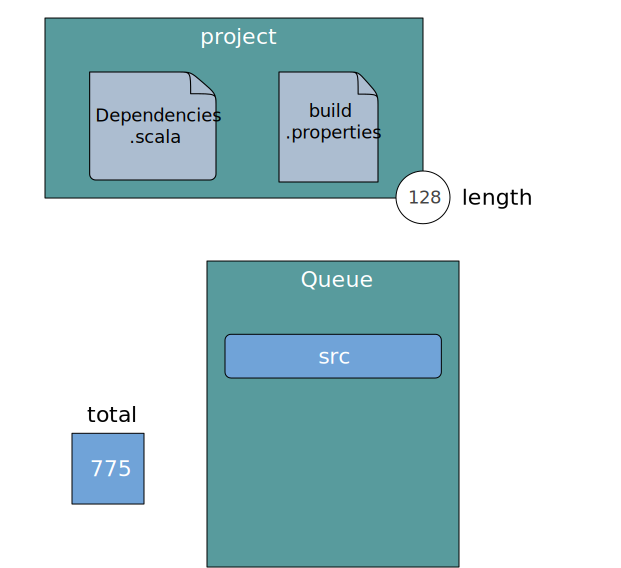 ]] --- # Imperative approach .forty-seven-left[ ```scala import java.io.File import scala.collection.mutable def diskUsage(input: File): Long = { var total = 0L val queue = mutable.Queue(input) while (queue.nonEmpty) { val file = queue.dequeue() total += file.length() if(file.isDirectory) queue.addAll(file.listFiles()) } total } ``` ] .forty-seven-right[.center[ 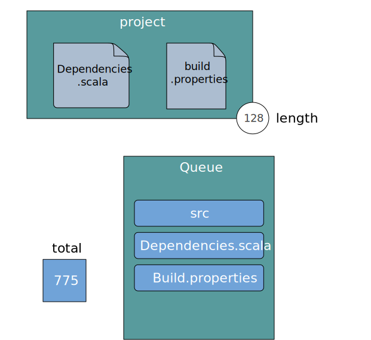 ]] --- # Recursive approach .forty-seven-left[ <br> ```scala import java.io.File def diskUsage(file: File): Long = if(file.isDirectory) ??? else ??? ``` ] --- # Recursive approach .forty-seven-left[ <br> ```scala import java.io.File def diskUsage(file: File): Long = if(file.isDirectory) { val childrenDiskUsage: Long = ??? file.length() + childrenDiskUsage } else file.length() ``` ] --- # Recursive approach .forty-seven-left[ <br> ```scala import java.io.File def diskUsage(file: File): Long = if(file.isDirectory) { val childrenDiskUsage = file .listFiles // Array[File] .map(diskUsage) // Array[Long] .sum // Long file.length() + childrenDiskUsage } else file.length() ``` ] --- .forty-seven-left[ # Imperative ```scala import java.io.File import scala.collection.mutable def diskUsage(input: File): Long = { var total = 0L val queue = mutable.Queue(input) while (queue.nonEmpty) { val file = queue.dequeue() total += file.length() if(file.isDirectory) queue.addAll(file.listFiles()) } total } ``` ] .forty-seven-right[ # Recursive ```scala import java.io.File def diskUsage(file: File): Long = if(file.isDirectory) { val childrenDiskUsage = file .listFiles .map(diskUsage) .sum file.length() + childrenDiskUsage } else file.length() ``` ] --- # File system: disk usage .forty-seven-left[ <br> ```scala import java.io.File def diskUsage(file: File): Long = if(file.isDirectory) { val childrenDiskUsage = file .listFiles // Array[File] .map(diskUsage) // Array[Long] .sum // Long file.length() + childrenDiskUsage } else file.length() ``` ] .forty-seven-right[.center[ 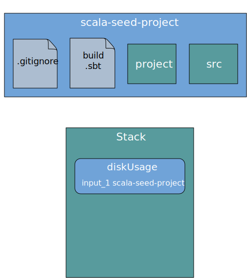 ]] --- # File system: disk usage .forty-seven-left[ <br> ```scala import java.io.File def diskUsage(file: File): Long = if(file.isDirectory) { val childrenDiskUsage = file .listFiles // Array[File] .map(diskUsage) // Array[Long] .sum // Long file.length() + childrenDiskUsage } else file.length() ``` ] .forty-seven-right[.center[ ]] --- # File system: disk usage .forty-seven-left[ <br> ```scala import java.io.File def diskUsage(file: File): Long = if(file.isDirectory) { val childrenDiskUsage = file .listFiles // Array[File] .map(diskUsage) // Array[Long] .sum // Long file.length() + childrenDiskUsage } else file.length() ``` ] .forty-seven-right[.center[ ]] --- # File system: disk usage .forty-seven-left[ <br> ```scala import java.io.File def diskUsage(file: File): Long = if(file.isDirectory) { val childrenDiskUsage = file .listFiles // Array[File] .map(diskUsage) // Array[Long] .sum // Long file.length() + childrenDiskUsage } else file.length() ``` ] .forty-seven-right[.center[ 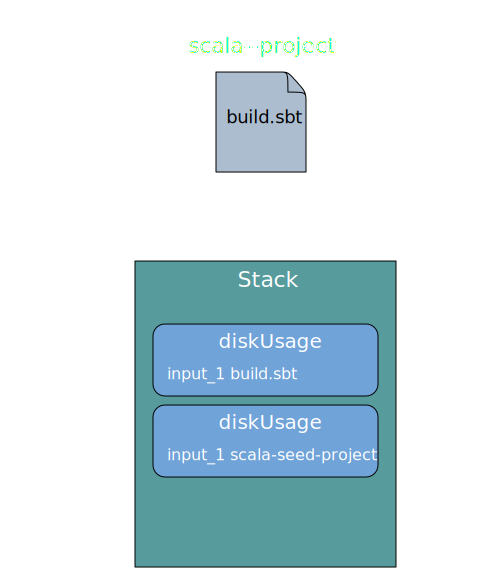 ]] --- # File system: disk usage .forty-seven-left[ <br> ```scala import java.io.File def diskUsage(file: File): Long = if(file.isDirectory) { val childrenDiskUsage = file .listFiles // Array[File] .map(diskUsage) // Array[Long] .sum // Long file.length() + childrenDiskUsage } else file.length() ``` ] .forty-seven-right[.center[ ]] --- # File system: disk usage .forty-seven-left[ <br> ```scala import java.io.File def diskUsage(file: File): Long = if(file.isDirectory) { val childrenDiskUsage = file .listFiles // Array[File] .map(diskUsage) // Array[Long] .sum // Long file.length() + childrenDiskUsage } else file.length() ``` ] .forty-seven-right[.center[ 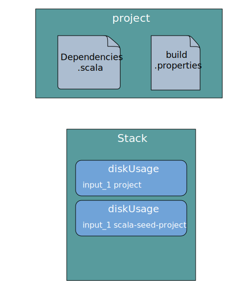 ]] --- # File system: disk usage .forty-seven-left[ <br> ```scala import java.io.File def diskUsage(file: File): Long = if(file.isDirectory) { val childrenDiskUsage = file .listFiles // Array[File] .map(diskUsage) // Array[Long] .sum // Long file.length() + childrenDiskUsage } else file.length() ``` ] .forty-seven-right[.center[ 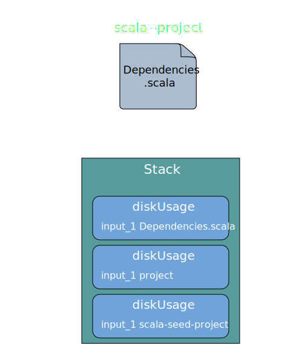 ]] --- background-image: url(../img/foundation/file-tree.svg) --- background-image: url(../img/foundation/file-tree-stack-safety.svg) --- # JVM memory model 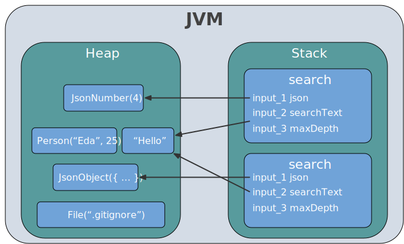 --- # JVM memory model 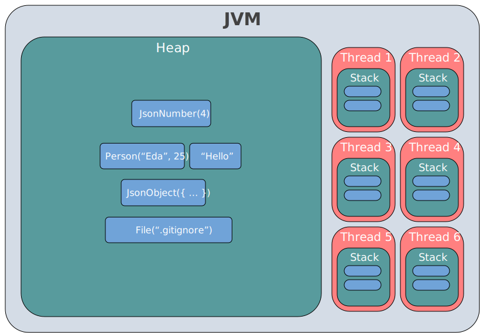 --- .forty-seven-left[ # Explicit data structure ```scala import java.io.File import scala.collection.mutable def diskUsage(input: File): Long = { var total = 0L val queue = mutable.Queue(input) while (queue.nonEmpty) { val file = queue.dequeue() total += file.length() if(file.isDirectory) queue.addAll(file.listFiles()) } total } ``` ] .forty-seven-right[ # Implicit data structure ```scala import java.io.File def diskUsage(file: File): Long = if(file.isDirectory) { val childrenDiskUsage = file .listFiles // Array[File] .map(diskUsage) // Array[Long] .sum // Long file.length() + childrenDiskUsage } else file.length() ``` ] --- background-image: url(../img/foundation/tree-elements-1.svg) # How many elements? --- background-image: url(../img/foundation/tree-unbalanced.svg) # Unbalanced tree --- background-image: url(../img/foundation/tree-elements-2.svg) # How many elements? --- background-image: url(../img/foundation/deep-linked-list.svg) # List --- # Recursive sum <br> ```scala def sum(numbers: List[Int]): Int = ??? ``` --- # Recursive sum <br> .forty-seven-left[ ```scala def sum(numbers: List[Int]): Int = numbers match { case Nil => ??? case head :: tail => ??? } ``` ] .forty-seven-right[ ```scala enum List[+A] { case Nil case ::(head: A, tail: List[A]) } ``` ] --- # Recursive sum <br> .forty-seven-left[ ```scala def sum(numbers: List[Int]): Int = numbers match { case Nil => ??? case head :: tail => ??? } ``` ```scala def sum(numbers: List[Int]): Int = numbers match { case Nil => ??? case ::(head, tail) => ??? } ``` ] .forty-seven-right[ ```scala enum List[+A] { case Nil case ::(head: A, tail: List[A]) } ``` ] --- # Recursive sum <br> ```scala def sum(numbers: List[Int]): Int = numbers match { case Nil => 0 case head :: tail => sum(tail) + head } ``` --- # Recursive sum <br> ```scala def sum(numbers: List[Int]): Int = numbers match { case Nil => 0 case head :: tail => sum(tail) + head } ``` ```scala sum(List(1,2,3,4,5)) // res47: Int = 15 ``` ```scala val largeList = List.range(1, 10000) // largeList: List[Int] = List(1,2,3,4,...,10000) sum(largeList) // java.lang.StackOverflowError ``` --- # Recursive contains ```scala def contains(list: List[Int], number: Int): Boolean = list match { case Nil => false case head :: tail => if (head == number) true else contains(tail, number) } ``` ```scala contains(List(1,2,3,4), 3) // res49: Boolean = true contains(List(1,2,3,4), 5) // res50: Boolean = false ``` --- # Recursive contains .forty-sevent-left[ ```scala def contains(list: List[Int], number: Int): Boolean = list match { case Nil => false case head :: tail => if (head == number) true else contains(tail, number) } ``` ] ```scala contains(List(1,2,3,4), 3) // res52: Boolean = true contains(List(1,2,3,4), 5) // res53: Boolean = false ``` --- # Recursive contains ```scala def contains(list: List[Int], number: Int): Boolean = list match { case Nil => false case head :: tail => if (head == number) true else contains(tail, number) } ``` ```scala val largeList = List.range(1, 10000) // largeList: List[Int] = List(1,2,3,4,...,10000) contains(largeList, 5) // res: Boolean = true ``` --- # Recursive contains ```scala def contains(list: List[Int], number: Int): Boolean = list match { case Nil => false case head :: tail => if (head == number) true else contains(tail, number) } ``` ```scala val largeList = List.range(1, 10000) // largeList: List[Int] = List(1,2,3,4,...,10000) contains(largeList, 5) // res: Boolean = true contains(largeList, -1) // res: Boolean = false ``` --- class: medium-code # Recursive functions .fifty-two-left[ ```scala def contains(list: List[Int], number: Int): Boolean = list match { case Nil => false case head :: tail => if (head == number) true else contains(tail, number) } ``` ] .forty-two-right[ ```scala def sum(list: List[Int]): Int = list match { case Nil => 0 case head :: tail => sum(tail) + head } ``` ] --- class: medium-code # Recursive functions .fifty-two-left[ ```scala def contains(list: List[Int], number: Int): Boolean = list match { case Nil => false case head :: tail => if (head == number) true else contains(tail, number) } ``` ] .forty-two-right[ ```scala def sum(list: List[Int]): Int = list match { case Nil => 0 case head :: tail => head + sum(tail) } ``` ] --- class: medium-code # Recursive functions .fifty-two-left[ ```scala def contains(list: List[Int], number: Int): Boolean = list match { case Nil => false case head :: tail => if (head == number) true else contains(tail, number) } ``` ] .forty-two-right[ ```scala def sum(list: List[Int]): Int = list match { case Nil => 0 case head :: tail => val rest = sum(tail) head + rest } ``` ] --- class: medium-code # Tail recursion .fifty-two-left[ ```scala import scala.annotation.tailrec @tailrec def contains(list: List[Int], number: Int): Boolean = list match { case Nil => false case head :: tail => if (head == number) true else contains(tail, number) } ``` ] .forty-two-right[ ```scala import scala.annotation.tailrec @tailrec def sum(list: List[Int]): Int = list match { case Nil => 0 case head :: tail => sum(tail) + head } // [error] could not optimize @tailrec // annotated method sum: // it contains a recursive call not in // tail position ``` ] --- # Tail recursive sum <br> ```scala import scala.annotation.tailrec @tailrec def sum(numbers: List[Int], state: Int): Int = numbers match { case Nil => state case head :: tail => sum(tail, state + head) } ``` ```scala sum(List(1,2,3,4,5), 0) // res: Int = 15 sum(List.range(1, 10000), 0) // res: Int = 49995000 ``` --- class: medium-code # Tailrec vs imperative .fifty-two-left[ ```scala import scala.annotation.tailrec @tailrec def sum(numbers: List[Int], state: Int): Int = numbers match { case Nil => state case head :: tail => sum(tail, state + head) } ``` ] .forty-two-right[ ```scala def sum(numbers: List[Int]): Int = { var state = 0 for (number <- numbers) state += number state } ``` ] --- class: medium-code # Tailrec vs imperative .fifty-two-left[ ```scala import scala.annotation.tailrec @tailrec def sum(numbers: List[Int], state: Int): Int = numbers match { case Nil => state case head :: tail => sum(tail, state + head) } def sum(numbers: List[Int]): Int = sum(numbers, state = 0) ``` ] .forty-two-right[ ```scala def sum(numbers: List[Int]): Int = { var state = 0 for (number <- numbers) state += number state } ``` ] --- class: small-code # Hide tailrec implementation .forty-seven-left[ ## Private method ```scala @tailrec private def sum(numbers: List[Int], state: Int): Int = numbers match { case Nil => state case head :: tail => sum(tail, state + head) } def sum(numbers: List[Int]): Int = sum(numbers, state = 0) ``` ] .forty-seven-right[ ## Nested method ```scala def sum(numbers: List[Int]): Int = { @tailrec def go(numbers: List[Int], state: Int): Int = numbers match { case Nil => state case head :: tail => sum(tail, state + head) } go(numbers, state = 0) } ``` ] --- background-image: url(../img/fp-tower/website-background-white.svg) class: middle, white # StackSafeRecursiveExercises.scala --- class: white background-image: url(../img/fp-tower/website-background.svg) <br> # .white[Summary] <br> .medium[ * Recursive functions are convenient <br> to traverse recursive data structures * Stack-safety concerns * Solutions: * limit the depth * tailrec annotation ] --- class: medium-code # Tail recursive sum .fifty-two-left[ <br> ```scala def sum(numbers: List[Int]): Int = { @tailrec def go(numbers: List[Int], state: Int): Int = numbers match { case Nil => state case head :: tail => sum(tail, state + head) } go(numbers, state = 0) } ``` ] --- class: medium-code # Imperative diskUsage .forty-seven-left[ ```scala import java.io.File import scala.collection.mutable def diskUsage(input: File): Long = { var total = 0L val queue = mutable.Queue(input) while (queue.nonEmpty) { val file = queue.dequeue() total += file.length() if(file.isDirectory) queue.addAll(file.listFiles()) } total } ``` ]